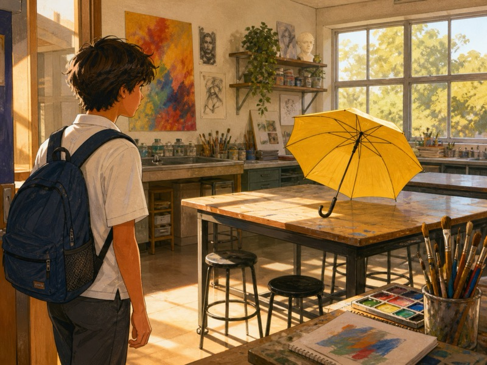
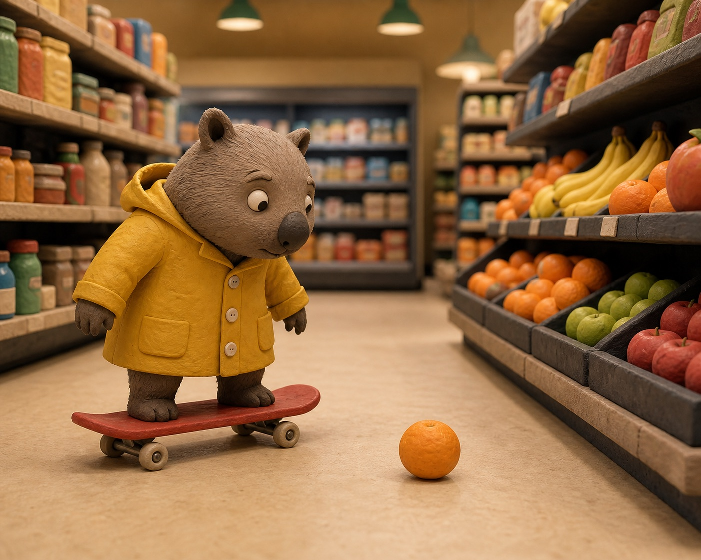
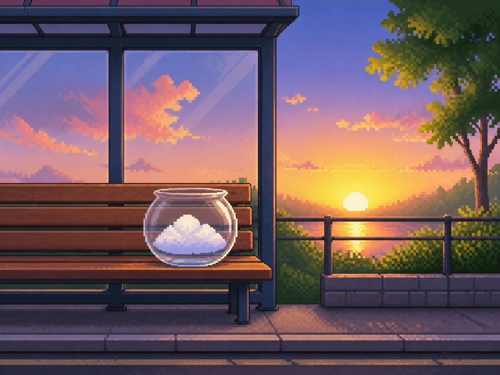

Investigating & defining
1 Look
How does a four-panel joke work, and what makes each frame count?
1 · Read the guide
First stop: camera clues. Read the guide, then sort six real panels.
Pro Artist’s Guide to Comic & Manga Layouts, Paneling, Flow
Steve Ellis · Art Rocket · about 8 minutes to read
Read the sections on panels, the gaps between them and shot types. Notice: the gap between panels changes how fast the story feels, and a close-up and a wide shot do different jobs. It’s a US site, so the spelling looks a bit different.
No image descriptions on that page — here’s what the diagrams show: one page laid out with wide gaps between panels, then narrow ones. One moment drawn as a wide shot, a mid shot and a close-up.
Open the article (opens in a new tab)
Opens in a new tab — come back here for step 2, the Panel Scramble.
1 · Learn the shot names
Exploring Shot Types
ACMI · Australian Centre for the Moving Image · about 5 minutes
Wide, mid, close-up. Look at the film stills and notice what changes when the camera moves closer: a wide shot tells you where you are, a close-up tells you how someone feels. Your four frames get to use both.
No account and no login. You only need the shot-type section — the rest is there if you want it.
Open the shot types (opens in a new tab)
Opens in a new tab — come back here for the Panel Scramble.
Quick check: name the shot
Three pictures. Pick the shot each one uses. Wrong answers just try again.
-

-

-

0 of 3 named.
2 · Panel Scramble
Choose four pictures, in the order you want them read.
Six available pictures
Tap up to four in the order you want the reader to see them.
- 1
Choose a picture.
- 2
Choose a picture.
- 3
Choose a picture.
- 4
Choose a picture.
3 · Read the story
Here’s one way your order could be read. Swap a picture to change it.
Your four pictures, in your order:
Choose four pictures to reveal a reading.
There are no pictures in your order yet. Go back to Panel Scramble and choose four.
← Re-order the pictures and generate again
One possible reading
This is not a right answer. It is a first story made from the four pictures you chose.
2 · Panel Scramble
Six panels from one story. Sort them by how close the camera is. Tap a panel, then tap a bin — wrong answers come back with a clue.
There’s no real camera, but every panel is drawn as if one stood somewhere. “Shot” means where it’s standing.
0 of 6 placed.
Keyboard: press Enter or Space to pick a panel up, Tab to a bin, then Enter or Space to put it down. Escape puts it back.
What do these shots do?
You’ve sorted them. Now say what they do — no wrong answer, just what’s true for you.
Establishing. You’ve just been shown the whole room. How does it feel?
Mid. Now you can see the thing and where it stands. What changed?
Close-up. Now you can only see one detail. What does that do?
3 · Pick your shot
Your first frame sets everything up. Which shot are you starting with?
Done. Frame 1: —
Write that down or just remember it — the site doesn’t save anything.
Next: 2 Roll →Going further
These six panels are one story.
- Put them in an order that works. You can only use four. Which two do you cut, and what does the reader have to work out on their own?
- Which frame is doing the punchline’s job? How can you tell without being told?
Nothing to type. Say it to the person next to you, or to me when I get to your table.